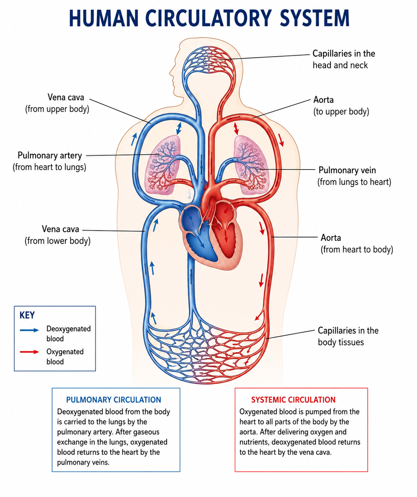
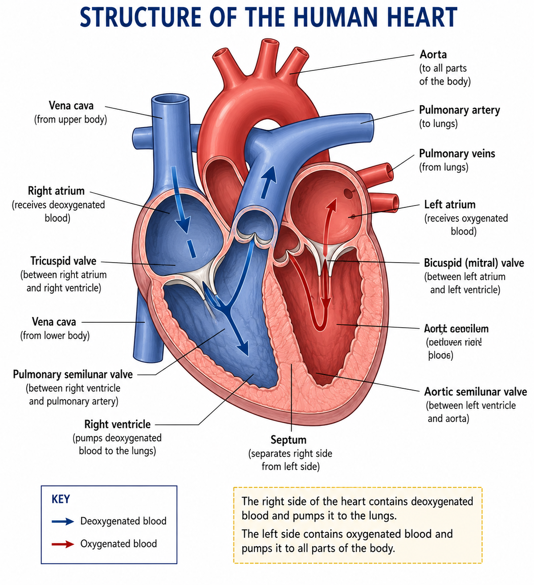
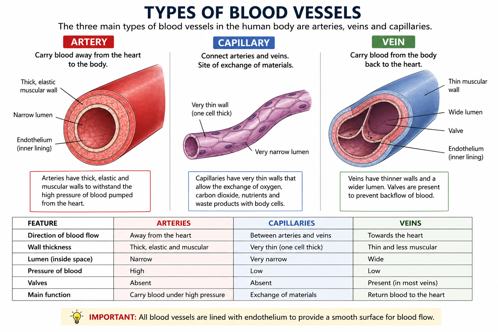

1. What is Transport?
Transport is the movement of substances from one part of an organism to another.
Transport is necessary because cells need useful substances such as oxygen, water and nutrients, while waste products such as carbon dioxide must be removed.
Important substances transported
- Oxygen
- Carbon dioxide
- Digested food substances
- Water
- Mineral ions
- Hormones
- Waste products
- Heat
2. Why Do Large Organisms Need Transport Systems?
Small organisms can often obtain substances by diffusion because they have a large surface area compared with their volume.
In large multicellular organisms, most cells are far from the external environment. Diffusion alone would be too slow to supply all cells with their requirements.
Therefore, large organisms have specialised transport systems that move substances rapidly around the body.
In humans
The circulatory system transports substances using blood, the heart and blood vessels.
In plants
The transport system consists mainly of xylem and phloem.
3. The Human Circulatory System
The human circulatory system is a transport system made up of:
- The heart
- Blood
- Blood vessels
Humans have a closed circulatory system because blood remains inside blood vessels.
Humans also have a double circulatory system because blood passes through the heart twice during one complete circulation around the body.
4. Double Circulation
The human circulatory system has two main circuits:
Pulmonary circulation
This carries blood between the heart and the lungs.
Heart → lungs → heart
Systemic circulation
This carries blood between the heart and the rest of the body.
Heart → body → heart
The double circulation allows blood to be pumped at suitable pressure to the lungs and then at higher pressure to the rest of the body.
5. Human Circulatory System Diagram

Exam tip: Learn the direction of blood flow, not just the names of the vessels.
6. The Heart
The heart is a muscular organ that pumps blood around the body.
It is divided into a right side and a left side by a muscular wall called the septum.
The heart has four chambers:
- Right atrium
- Right ventricle
- Left atrium
- Left ventricle
7. Structure of the Heart

8. The Four Chambers of the Heart
| Chamber | Function |
|---|---|
| Right atrium | Receives deoxygenated blood from the body. |
| Right ventricle | Pumps deoxygenated blood to the lungs. |
| Left atrium | Receives oxygenated blood from the lungs. |
| Left ventricle | Pumps oxygenated blood to the whole body. |
9. Why is the Left Ventricle Thicker?
The wall of the left ventricle is thicker and more muscular than the wall of the right ventricle.
This is because the left ventricle must pump blood around the entire body.
The right ventricle only pumps blood to the lungs, so it does not need to generate as much pressure.
Exam answer: The left ventricle has a thicker muscular wall because it pumps blood around the whole body at high pressure.
10. The Septum
The septum is the muscular wall separating the left and right sides of the heart.
Its main function is to prevent oxygenated and deoxygenated blood from mixing.
11. Valves in the Heart
Valves prevent the backflow of blood.
They ensure that blood flows through the heart in the correct direction.
Important valves
- Tricuspid valve
- Bicuspid/mitral valve
- Pulmonary semilunar valve
- Aortic semilunar valve
12. Major Blood Vessels Connected to the Heart
| Blood vessel | Direction of blood flow |
|---|---|
| Vena cava | Body → right atrium |
| Pulmonary artery | Right ventricle → lungs |
| Pulmonary veins | Lungs → left atrium |
| Aorta | Left ventricle → body |
13. Complete Pathway of Blood Through the Heart
Learn this sequence carefully:
Body → vena cava → right atrium → tricuspid valve → right ventricle → pulmonary semilunar valve → pulmonary artery → lungs
After gaseous exchange in the lungs:
Lungs → pulmonary veins → left atrium → bicuspid/mitral valve → left ventricle → aortic semilunar valve → aorta → body
14. Arteries
Arteries are blood vessels that carry blood away from the heart.
Adaptations of arteries
- Thick muscular walls
- Elastic walls
- Relatively narrow lumen
- Strong walls withstand high blood pressure
Most arteries carry oxygenated blood, but the pulmonary artery carries deoxygenated blood.
15. Veins
Veins are blood vessels that carry blood towards the heart.
Adaptations of veins
- Thinner walls than arteries
- Less muscular tissue
- Wider lumen
- Valves prevent backflow
- Carry blood at relatively low pressure
Most veins carry deoxygenated blood, but the pulmonary veins carry oxygenated blood.
16. Capillaries
Capillaries are very small blood vessels that connect arteries to veins and allow exchange of substances between blood and body cells.
Adaptations of capillaries
- Walls are one cell thick.
- They have a very narrow lumen.
- They form extensive networks throughout tissues.
- They are close to body cells.
- The thin walls give a short diffusion distance.
17. Blood Vessels Diagram

18. Arteries, Veins and Capillaries Compared
| Feature | Artery | Vein | Capillary |
|---|---|---|---|
| Direction | Away from heart | Towards heart | Connects arteries and veins |
| Wall | Thick, muscular and elastic | Thin and less muscular | One cell thick |
| Lumen | Relatively narrow | Wide | Very narrow |
| Pressure | High | Low | Low |
| Valves | Absent | Present | Absent |
| Main function | Transport blood away from heart | Return blood to heart | Exchange substances |
19. Blood
Blood is a transport tissue made up of:
- Plasma
- Red blood cells
- White blood cells
- Platelets
Each component has a specialised function.
20. Plasma
Plasma is the liquid part of blood.
It transports many dissolved substances around the body.
Substances transported in plasma
- Glucose and other digested nutrients
- Carbon dioxide
- Urea
- Mineral ions
- Hormones
- Heat
21. Red Blood Cells
Red blood cells transport oxygen from the lungs to body tissues.
Adaptations
- Contain haemoglobin, which combines with oxygen.
- Have a biconcave shape, giving a large surface area for gas exchange.
- Have no nucleus when mature, providing more space for haemoglobin.
22. Haemoglobin and Oxygen
Haemoglobin is the red pigment in red blood cells.
In the lungs, where oxygen concentration is high, haemoglobin combines with oxygen to form oxyhaemoglobin.
In body tissues, oxygen is released from oxyhaemoglobin.
This oxygen can then be used by cells during respiration.
23. White Blood Cells
White blood cells protect the body against pathogens and disease.
Main functions
- Destroy pathogens by engulfing them.
- Produce antibodies.
- Produce antitoxins.
24. Platelets
Platelets are small cell fragments involved in blood clotting.
Blood clotting helps prevent excessive blood loss and reduces the entry of pathogens through damaged skin.
25. Functions of Blood
| Function | What is transported/protected? |
|---|---|
| Transport | Oxygen, nutrients, hormones and wastes |
| Protection | White blood cells fight pathogens |
| Clotting | Platelets reduce blood loss |
| Temperature regulation | Heat is distributed around the body |
26. Oxygenated and Deoxygenated Blood
Oxygenated blood contains a high concentration of oxygen.
Deoxygenated blood contains less oxygen because oxygen has been delivered to body cells.
Remember: blood is not simply "red" or "blue". The colours used in diagrams are conventions to make oxygenation easier to understand.
27. Gaseous Exchange Between Blood and Body Cells
At body tissues, oxygen diffuses from the blood into cells.
Carbon dioxide produced by respiration diffuses from cells into the blood.
The concentration gradients are maintained because cells continually use oxygen and produce carbon dioxide.
28. Tissue Fluid
Some plasma leaves capillaries and forms tissue fluid around cells.
Tissue fluid allows substances to move between the blood and body cells.
Oxygen and dissolved nutrients can pass from the blood through tissue fluid to cells, while carbon dioxide and other waste products move in the opposite direction.
29. The Lymphatic System
Some tissue fluid enters lymph vessels and becomes lymph.
The lymphatic system eventually returns excess fluid to the blood circulation.
It also plays an important role in body defence.
30. Pulse
A pulse is the rhythmic expansion of an artery caused by the pumping of blood by the heart.
Pulse rate is usually expressed as the number of beats or pulses per minute.
During exercise, pulse rate increases because muscles require more oxygen and glucose for respiration.
31. Measuring Pulse Rate
Pulse can be detected at places where an artery is close to the surface of the skin, such as the wrist or neck.
Simple investigation
- Rest quietly for several minutes.
- Measure the pulse for a known period of time.
- Record the pulse rate.
- Perform a controlled period of physical activity.
- Measure the pulse again.
- Continue recording during recovery.
The investigation should use the same person, timing method and exercise conditions when comparing results.
32. Effect of Exercise on the Circulatory System
During exercise, muscles respire more rapidly.
Therefore they require more oxygen and glucose and produce more carbon dioxide.
The heart responds by increasing its rate and usually the amount of blood pumped per minute.
Results of exercise
- Heart rate increases.
- Pulse rate increases.
- Breathing rate increases.
- Breathing becomes deeper.
- More oxygen reaches muscles.
- Carbon dioxide is removed more rapidly.
33. Why Does Heart Rate Increase During Exercise?
Heart rate increases to increase the supply of oxygen and glucose to active muscles and to remove carbon dioxide and other waste products more rapidly.
This supports the increased rate of respiration in muscle cells.
34. Transport in Plants
Plants need transport systems to move water, mineral ions and manufactured food substances.
The two main transport tissues are:
- Xylem
- Phloem
35. Xylem
Xylem transports water and mineral ions from the roots towards the stem and leaves.
The movement is mainly upward.
Functions of xylem
- Transports water.
- Transports mineral ions.
- Provides mechanical support to the plant.
36. Adaptations of Xylem Vessels
- Xylem vessels are long and form continuous tubes.
- Their walls are strengthened with lignin.
- They have no cytoplasm in their mature conducting vessels, allowing water to flow through the lumen.
- They provide support to the plant.
37. Mineral Ion Uptake by Roots
Mineral ions are absorbed from the soil by root hair cells.
When the concentration of mineral ions in the soil is lower than the concentration inside the root hair cell, mineral ions may be taken up by active transport.
Active transport requires energy released by respiration.
38. Root Hair Cells and Absorption
Root hair cells are specialised for absorbing water and mineral ions.
Adaptations
- Long extension gives a large surface area.
- Thin cell wall gives a short diffusion distance.
- Large surface area increases water absorption.
- Contain mitochondria for energy needed in active transport.
39. Water Uptake by Roots
Water enters root hair cells mainly by osmosis.
Water moves from a region of higher water potential to a region of lower water potential through a partially permeable membrane.
Water then moves across the root into the xylem.
40. Transpiration
Transpiration is the loss of water vapour from the aerial parts of a plant, mainly through the stomata of leaves.
Most transpiration occurs through the stomata.
41. Stomata and Guard Cells
Stomata are small pores mainly found in the epidermis of leaves.
Each stoma is surrounded by two guard cells.
Functions of stomata
- Allow carbon dioxide to enter the leaf.
- Allow oxygen to leave the leaf.
- Allow water vapour to leave during transpiration.
42. Transpiration Stream
The transpiration stream is the continuous movement of water and mineral ions from the roots through the xylem towards the leaves.
Water lost from leaves is replaced by water drawn upwards through the xylem.
43. Factors Affecting Transpiration Rate
Temperature
Higher temperature generally increases transpiration because water evaporates more rapidly.
Light intensity
Increased light intensity can increase transpiration because stomata tend to open for photosynthesis.
Wind speed
Increased wind speed generally increases transpiration by removing humid air around the leaf.
Humidity
High humidity reduces the water vapour concentration gradient between the leaf and surrounding air, reducing transpiration.
44. Investigating Transpiration
A simple way of investigating water loss is to use a potometer.
A potometer does not directly measure transpiration. It measures water uptake by a plant shoot, which can be used as an estimate of transpiration rate.
Possible variables
- Light intensity
- Wind speed
- Temperature
- Humidity
Change only one independent variable at a time and keep the other conditions constant.
45. Why Does Transpiration Help Transport Water?
Water evaporates from moist surfaces inside the leaf and diffuses out through the stomata.
This creates a pull that contributes to the upward movement of water through the xylem.
Water molecules also attract one another, helping maintain a continuous column of water in the xylem.
46. Phloem
Phloem transports dissolved products of photosynthesis, especially sucrose, from sources to sinks.
The movement of dissolved food substances through phloem is called translocation.
47. Translocation
Translocation is the transport of assimilates such as sucrose through the phloem.
Translocation can occur from a source to a sink in different directions depending on where food is produced, stored or required.
Sources
- Leaves producing sucrose by photosynthesis.
- Storage organs releasing stored food.
Sinks
- Growing roots
- Growing shoots
- Fruits
- Seeds
- Storage organs
48. Xylem vs Phloem
| Feature | Xylem | Phloem |
|---|---|---|
| Materials transported | Water and mineral ions | Sucrose and other assimilates |
| Main direction | Mainly upward | From source to sink |
| Main location | Roots, stems and leaves | Roots, stems and leaves |
| Support | Provides considerable support | Less important for support |
| Process | Water/mineral transport | Translocation |
49. Transport in Plants: Summary
- Roots absorb water and mineral ions.
- Water moves through the xylem.
- Transpiration causes loss of water vapour from leaves.
- The transpiration stream carries water and mineral ions towards the leaves.
- Leaves produce sugars during photosynthesis.
- Sucrose is transported through phloem by translocation.
50. Human vs Plant Transport Systems
| Feature | Humans | Plants |
|---|---|---|
| Main transport fluid/material | Blood | Water, mineral ions and assimilates |
| Main transport tissues | Blood vessels | Xylem and phloem |
| Main pumping/ driving system | Heart | Transpiration and other plant processes |
| Oxygen transport | Blood carries oxygen | Mostly by diffusion between tissues and air spaces |
| Food transport | Blood transports digested nutrients | Phloem transports assimilates such as sucrose |
51. Important Transport Definitions
- Transport: Movement of substances from one part of an organism to another.
- Circulatory system: The heart, blood and blood vessels responsible for transport in humans.
- Artery: Blood vessel carrying blood away from the heart.
- Vein: Blood vessel carrying blood towards the heart.
- Capillary: Very small blood vessel where exchange of substances occurs.
- Pulse: Rhythmic expansion of an artery caused by the heartbeat.
- Xylem: Plant tissue transporting water and mineral ions.
- Phloem: Plant tissue transporting assimilates such as sucrose.
- Transpiration: Loss of water vapour from the aerial parts of a plant, mainly through stomata.
- Translocation: Transport of assimilates through the phloem.
52. O/L GCE Exam Focus 🎯
These are areas you should be particularly prepared to answer in an examination:
- Define transport.
- Explain why large organisms need transport systems.
- Describe the human circulatory system.
- Label the chambers and major vessels of the heart.
- Trace the pathway of blood through the heart.
- Explain the function of valves.
- Explain why the left ventricle has a thick wall.
- Compare arteries, veins and capillaries.
- Describe adaptations of red blood cells.
- State functions of plasma, white blood cells and platelets.
- Explain the effects of exercise on heart rate and breathing.
- Describe transport in plants.
- Compare xylem and phloem.
- Explain transpiration.
- Describe factors affecting transpiration.
- Explain translocation.
- Describe investigations involving pulse or transpiration.
53. Common O/L Mistakes ⚠️
-
Wrong: Arteries always carry oxygenated blood.
Correct: Arteries carry blood away from the heart. The pulmonary artery carries deoxygenated blood. -
Wrong: Veins always carry deoxygenated blood.
Correct: Veins carry blood towards the heart. Pulmonary veins carry oxygenated blood. -
Wrong: The left side of the heart contains
deoxygenated blood.
Correct: The left side normally contains oxygenated blood. -
Wrong: The right ventricle pumps blood
around the whole body.
Correct: It pumps blood to the lungs. -
Wrong: Phloem only transports upwards.
Correct: Phloem transports assimilates from sources to sinks. -
Wrong: Transpiration means water absorption
by roots.
Correct: Transpiration is the loss of water vapour from aerial parts of a plant. -
Wrong: A potometer directly measures
transpiration.
Correct: It measures water uptake as an estimate of transpiration.
54. Quick Revision 🧠
Human transport
Heart + Blood + Blood vessels = Circulatory system
Arteries → Away from heart
Veins → Towards heart
Capillaries → Exchange
Right side → Lungs
Left side → Body
Plant transport
Xylem → Water + mineral ions
Phloem → Sucrose/assimilates
Transpiration → Water vapour loss
Translocation → Movement of assimilates in phloem
55. Final O/L Transport Checklist ✅
Before considering this topic complete, make sure you can:
- ☐ Define transport.
- ☐ Explain why large organisms need transport systems.
- ☐ Explain double circulation.
- ☐ Label the human heart.
- ☐ Name the four chambers.
- ☐ Name the major blood vessels.
- ☐ Trace blood through the heart.
- ☐ Explain the function of valves.
- ☐ Explain the role of the septum.
- ☐ Explain why the left ventricle is thick.
- ☐ Compare arteries, veins and capillaries.
- ☐ Explain the functions of blood components.
- ☐ Explain oxygen transport by haemoglobin.
- ☐ Explain the effect of exercise on heart rate.
- ☐ Explain xylem transport.
- ☐ Explain phloem transport.
- ☐ Define transpiration.
- ☐ Explain factors affecting transpiration.
- ☐ Explain translocation.
- ☐ Interpret transport diagrams.
- ☐ Answer transport practical/investigation questions.
🎓 Master the diagrams + pathways + comparisons. These are especially important for O/L examination questions.